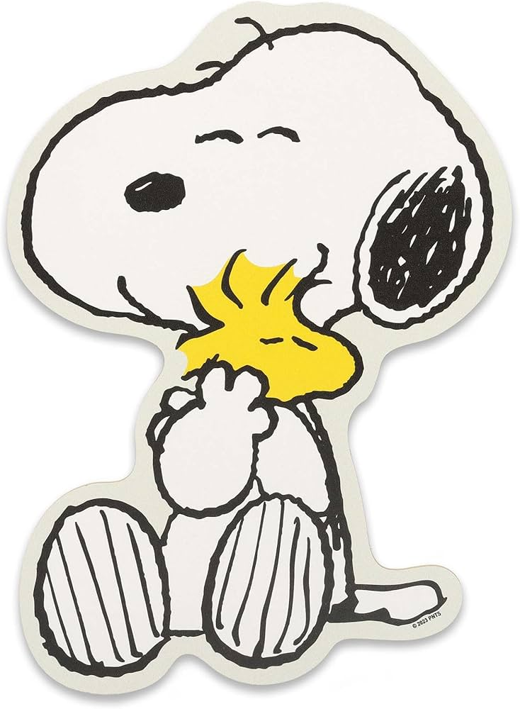

| Paginas Web - Snoopy | ||||
MenúInicio Noticias Galería Eventos Contacto |
< | |||
Galería |
PublicidadAnuncio |
Publicidad Anuncio |
||
Contenido PrincipalSnoopy es, junto a Charlie Brown, el personaje principal de la tira cómica Peanuts, conocida en español como los títulos Carlitos, Charlie Brown y Snoopy o Rabanitos. Snoopy es un perro de la raza Beagle. Fue creado en 1950 por el historietista Charles M. Schulz. En este ejemplo se utilizan combinaciones de rowspan y colspan para organizar las diferentes secciones de la página. |
Video" |
|||
NoticiasSnoopy está celebrando su 75 aniversario en 2025-2026 con nuevas colaboraciones, mercancía de edición limitada y el desarrollo de una nueva película por WildBrain Studios. |
TecnologíaSnoopy se trata de que vivir también es descansar, jugar, mirar las nubes y no hacer nada sin sentir culpa. |
EducaciónSnoopy llegó a comprender lo importante que es ser realista en la vida y con la vida. La importancia de saber que todo puede ocurrir a pesar de tener una expectativa alta, que puede estar dentro del orden de la vida y que no todo acaba si se desmorona. |
EventosLos próximos eventos destacados de Snoopy incluyen la Snoopy Run 2025 (3k/5k) el 4 de octubre y la 11va. Karrera Snoopy Un Kilo de Ayuda el 2 de noviembre de 2025, ambas en CDMX. Además, se celebran los 75 años de Peanuts con exposiciones y eventos temáticos, incluyendo opciones de Navidad y una nueva cafetería temática, Casa Snoopy en CDMX. |
|
| Paginas Web | Diseño de snoopy lover| cc © 2026 Derechos reservados | ||||